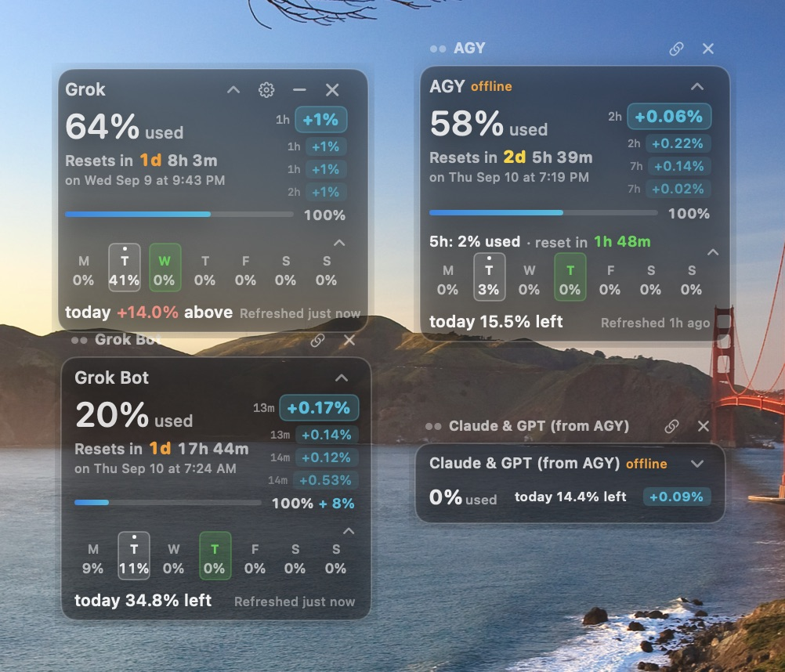
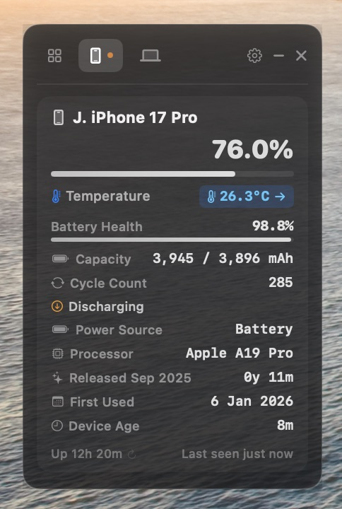

BigUwidget

Mac first, then Linux and Windows. Update prompts come from GitHub releases. Also available as a Grok Bot template (below).
Portfolio
Product builder · London
I build small, real tools with AI coding agents: Claude Code, Grok Build and Antigravity on the command line, and Grok Bot. Desktop widgets, local utilities and bots that solve one clear problem and stay out of the way.
Open to product-builder and AI-adjacent roles, freelance tools, and helping small businesses start using AI tools to save time.
Shipped

Mac first, then Linux and Windows. Update prompts come from GitHub releases. Also available as a Grok Bot template (below).

Released often; recent versions added live Mac temperature and a correct iPhone battery percentage.
Not published yet. Live link when it is.
Grok Bot templates
10-second excerpts. I use it often to cut short clips from long videos.